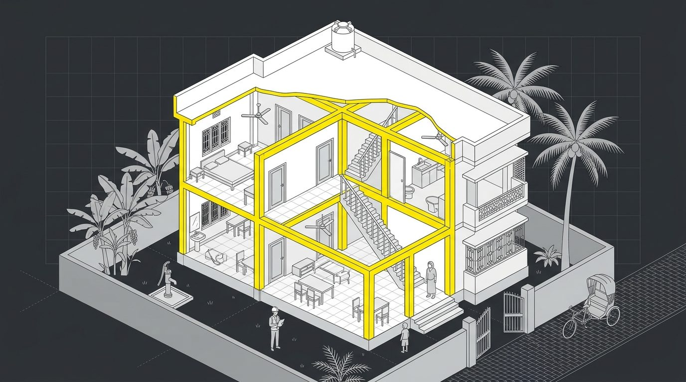
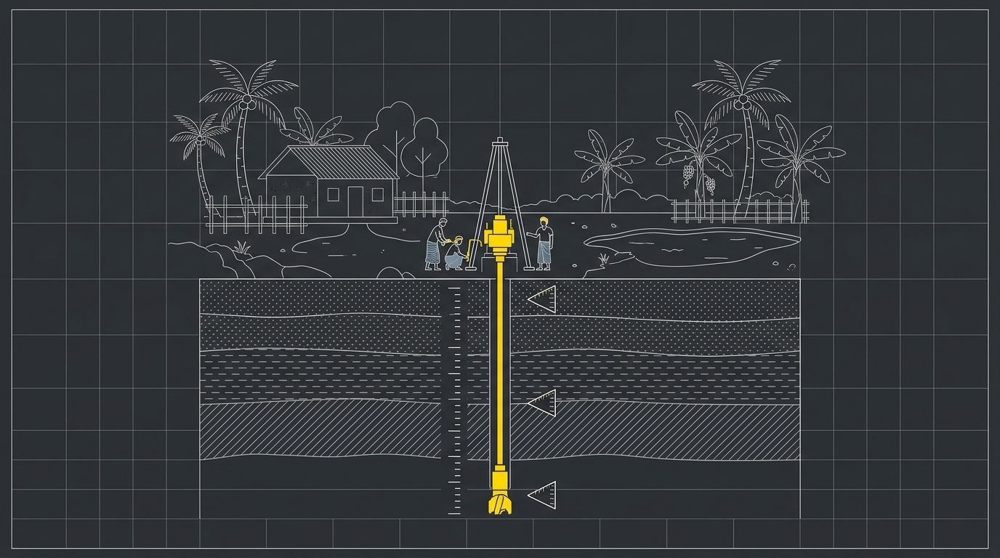
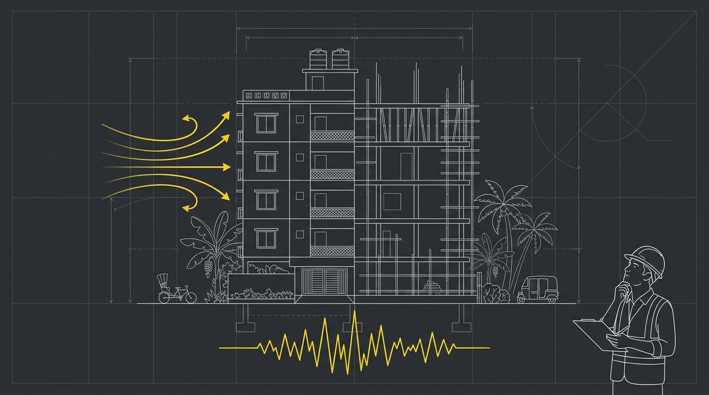
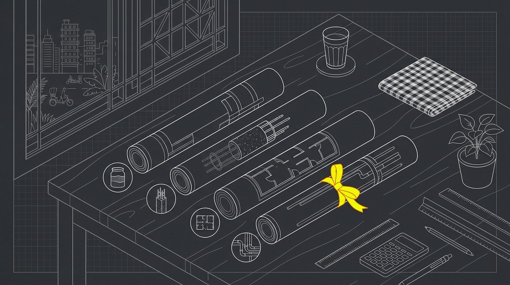
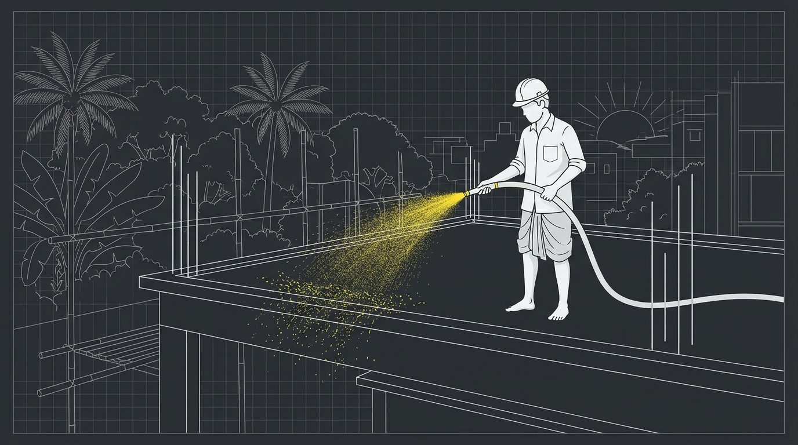

মিস্ত্রির মুখস্থ ডিজাইন নয়। একজন প্র্যাকটিসিং স্ট্রাকচারাল ইঞ্জিনিয়ারের হিসাবে বাড়ি নিরাপদ হয়, খরচ ২০–৩০% কমে।

DWG 01 · FRAMEছোট দোতলা থেকে হাইরাইজ, নীতি একই। BNBC 2020 মেনে।

কয়টা বোর, কত টাকা, রিপোর্টে কী দেখবেন। ফুটিং, পাইল না ম্যাট, মাটি বলবে।

ভূমিকম্প ও বাতাসের চাপ ধরে কলাম, বিম, স্ল্যাব, ফাউন্ডেশন। যেখানে যতটুকু দরকার, ততটুকুই।

অন্যের ড্রইং আছে? কোথায় রড বেশি, কোথায় কম, ল্যাপিং-রিং ঠিক আছে কি না।

রড বাঁধা ও ঢালাইয়ের দিন উপস্থিতি। প্রবাসীদের জন্য ছবি-রিপোর্ট।
হ্যাঁ। নিচু জমি বা পাশে পুকুর থাকলে বাড়ি একদিকে বসে যায়, ভরকেন্দ্র সরে ফাটল ও ধস হয়। ৩–৪টি ফিল্ড বোরে ১০–১৫ হাজার টাকায় হয়ে যায়।
না, সাধারণত ২০–৩০% কমে। মুখস্থ ডিজাইনে ছাদে ২ টনের জায়গায় ৩ টন রড যায়; এক ফ্লোরে ৫০০ কেজি বেশি মানেই ৪০ হাজার টাকা লস।
রাফ ধারণা: প্রতি বর্গফুট ~১,৫০০ টাকা। সঠিক (৯০–৯৫%) হিসাব আসে ডিজাইন শেষে।
সয়েল রিপোর্ট, ড্রইং বা সাইটের ছবি পাঠান। ৪৮ ঘণ্টার মধ্যে উত্তর। প্রথম প্রশ্ন ফ্রি।